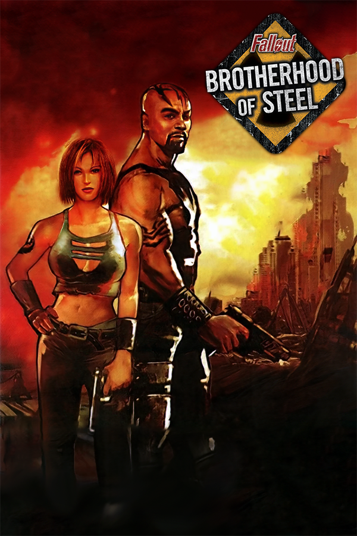

|  | |
| Playtime | Not Played |
| Last Activity | Never |
| Added | 5/2/2025 21:12:51 |
| Modified | 5/2/2025 21:13:54 |
| Completion Status | Not Played |
| Library | Playnite |
| Source | |
| Platform | Sony PlayStation 2 |
| Release Date | 1/13/2004 |
| Community Score | |
| Critic Score | 65 |
| User Score | |
| Genre | Action role-playing |
| Developer | Interplay Entertainment |
| Publisher | Interplay Entertainment |
| Feature | Multiplayer Single Player |
| Links | Wikipedia Official website |
| Tag | [People] composer: Craig Stuart Garfinkle [People] composer: Devin Townsend |
Fallout: Brotherhood of Steel is a 2004 action role-playing game developed and published by Interplay Entertainment. It was released for the PlayStation 2 and Xbox, and was the first entry in the Fallout series to be released for home video game consoles. Set in the year 2208, the player controls an initiate of the Brotherhood of Steel, a militant organization that attempts to bring order to a world that has been decimated by nuclear warfare. Critics often compared Fallout: Brotherhood of Steel to a hack and slash game, due to its emphasis on fast-paced combat and encounters with large groups of enemies. Fallout: Brotherhood of Steel does not feature an open world map like other Fallout games, and is instead linear in design.
In the early 2000s, Interplay attempted to expand into the console game market, and found commercial success with the 2001 game Baldur's Gate: Dark Alliance. This in turn inspired Interplay to greenlight development on a console entry to the Fallout series. The action-oriented tone of Fallout: Brotherhood of Steel significantly differed from the retrofuturistic aesthetic that had previously defined the series. Notable changes included a heavy metal soundtrack and overtly sexualized female characters. Fallout: Brotherhood of Steel sold poorly on release, and received mixed reviews. Critics found the gameplay to be repetitive and monotonous, and were divided in their opinions of the game's tone. In the years since its release, journalists and fans have consistently ranked Fallout: Brotherhood of Steel as one of the worst entries in the series, and the game's tepid reception contributed to the stagnation of the Fallout series in the mid-2000s.
Fallout: Brotherhood of Steel is an action role-playing game that is played from a top-down perspective. Set in the year 2208, the player controls an initiate of the Brotherhood of Steel, a militant organization that attempts to bring order to a world that has been decimated by nuclear warfare. At the beginning of the game, the player can choose to play as one of three player characters; three additional player characters can be unlocked for subsequent playthroughs by progressing through the game. Each character specializes in specific weapons. For example, the Nadia character can dual wield weapons, while the ghoul character Cain specializes in bladed melee weapons. Fallout: Brotherhood of Steel features both a single-player mode and a cooperative mode, in which two players can play through the game together.
Some critics have compared the gameplay of Fallout: Brotherhood of Steel to that of a hack and slash game, due to its emphasis on fast-paced combat and encounters with large groups of enemies. There are over 50 weapons available for the player to use, such as energy-based guns, gauntlets, and grenades. While in combat, the player can target specific enemies by locking onto them, which means the player character will always face the targeted enemy regardless of where it moves. The player can also jump, crouch, and dodge enemy attacks while in combat. Whenever the player kills an enemy or completes a quest, they will earn experience points. Once enough experience points are earned, the player can level up and select a perk, which is a permanent beneficial upgrade. For example, the Cat-Like perk increases the speed at which melee weapons are swung and the dodge speed. Some perks are only available to specific characters.
Fallout: Brotherhood of Steel does not feature an open world map like other Fallout games, and is instead linear in design. The player is confined to specific areas until all of the objectives have been met. For example, an early objective is to kill all of the mutated scorpions in an abandoned building. Fallout: Brotherhood of Steel is divided into three chapters, each increasing in difficulty. When not in combat, the player can talk to non-player characters (NPCs). Some NPCs act as vendors, and will buy and sell items to the player. NPCs can also offer optional quests known as sidequests, which will provide additional experience points.
Fallout: Brotherhood of Steel is set in the year 2208, 131 years after a devastating nuclear war between the United States and China. After the war, a militant organization called the Brotherhood of Steel is formed, which seek to restore order and secure harmful technology. The player controls a Brotherhood of Steel member nicknamed the Initiate, and is tasked with finding a group of Brotherhood of Steel soldiers called paladins that went missing near the town of Carbon. After defending the town from a group of raiders, the Initiate confronts the raider leader Jane, and learns Jane directed the paladins to the city of Los to investigate super mutant activity.
The city of Los is populated by ghouls, many of whom belong to a cult called the Church of the Lost. The paladins were captured by the Church of the Lost, and all but paladin Rhombus were killed. The Initiate kills the cult leader Blake, but during the escape attempt Rhombus is mortally wounded. Before his death, Rhombus instructs the Initiate to destroy the super mutant compound in an underground fallout shelter called a Vault. The Initiate investigates the Vault, but their left arm is severed in a fight with the super mutant leader Attis. A group of Vault scientists rescue the Initiate and give them a robotic arm. The Initiate progresses further into the Vault, and learns that Attis was using the compound laboratory to research a cure for the virus that sterilizes super mutants. The Initiate starts a self-destruct sequence, and escapes the Vault via monorail.
In the early 2000s, Interplay Entertainment attempted to expand into the console game market, which they had previously ignored in favor of the PC game market. At the time, Interplay was undergoing a period of financial hardship, an issue that would persist for several years. Journalist Kat Bailey credits Interplay's financial struggles to the increased cost for game development, and the industry shift toward console gaming in the late 1990s. In 2001, Interplay released Baldur's Gate: Dark Alliance, the first console entry in the Baldur's Gate series. Baldur's Gate: Dark Alliance was a commercial success, and sold over one million copies by 2003. This in turn inspired Interplay to greenlight development on a console entry to the Fallout series.
The idea for a Fallout console game had existed for years before development began on Fallout: Brotherhood of Steel. Designer Chris Pasetto noted that an initial pitch was to make it a first-person shooter. After the release of Baldur's Gate: Dark Alliance however, Interplay mandated that Fallout: Brotherhood of Steel should feature more action oriented gameplay as opposed to the role-playing gameplay that had previously defined the series. Additionally, it would need to use the Snowblind game engine, which had been developed by Snowblind Studios for Baldur's Gate: Dark Alliance. Pasetto described the engine as a "rigid template". In an interview with Eurogamer, Pasetto said, "We didn't have the engineering bandwidth to do more than a few tweaks. Our main technical focus was improving the ranged combat for the gun-focused gameplay of Fallout."
The action-oriented tone of Fallout: Brotherhood of Steel significantly differed from the retrofuturistic aesthetic that had previously defined the series. For example, instead of a soundtrack that comprised popular songs from the 1950s, Fallout: Brotherhood of Steel's soundtrack consisted of contemporary heavy metal tracks from bands like Killswitch Engage and Slipknot. Craig Garfinkle and heavy metal musician Devin Townsend contributed ambient tracks. Additionally, the ideology of the Brotherhood of Steel organization was simplified, the fictional Nuka-Cola soft drink brand that had appeared in previous Fallout games was replaced with Bawls, and female characters are overtly sexualized. Pasetto claims these changes were instituted by Interplay executives, who wanted the game to appeal to a wider console audience. The development team objected to these changes, but their concerns were dismissed.
Fallout: Brotherhood of Steel was developed in tandem with the "Van Buren" project by Black Isle Studios, which was intended to be the third entry in the mainline Fallout series. However, development on "Van Buren" was hampered by mismanagement from Interplay, and after numerous developers from Black Isle resigned, the project was canceled in 2003.
Fallout: Brotherhood of Steel was announced in March 2003, and was initially scheduled for a fourth quarter release. Its release date was postponed when Interplay terminated its contract with distributor Vivendi Universal Games, due to a legal dispute between the two companies regarding payments for the game Lionheart: Legacy of the Crusader. Fallout: Brotherhood of Steel was released for the PlayStation 2 and Xbox in North America on January 13, 2004, and in Europe on April 2, 2004. According to Pasetto, Fallout: Brotherhood of Steel sold poorly. When asked about the commercial impact the game had on Interplay, Pasetto remarked, "It was just one of many projects that underperformed and would have had to sell miraculous numbers to change the fate of Interplay."
Fallout: Brotherhood of Steel received mixed reviews from critics. On the review aggregator website Metacritic, the PlayStation 2 version received a 64/100, while the Xbox version received a 66/100. Many critics noted the repetitive nature of the gameplay. GameSpot's Greg Kasavin felt the game was longer than it actually was due to the repetitive gameplay and uninteresting enemies. Kasavin wrote, "Hack-and-slash games shouldn't be complicated, but that doesn't mean they shouldn't have any depth." Edge described the gameplay as unengaging, noted that enemies often killed themselves due to poor coding, and the overall experience came across as "half-hearted". By contrast, Ed Lewis of IGN found the repetitive combat enjoyable and satisfying. Lewis said, "While it won't make you think too much, it's got enough action for a Saturday afternoon." Some critics bemoaned Fallout: Brotherhood of Steel's inability to properly simplify the role-playing mechanics of the Fallout series when compared to Baldur's Gate: Dark Alliance. Kristan Reed of Eurogamer felt that leveling up was pointless since enemies got proportionally harder as the game progressed.
The dialogue and more action-oriented tone divided critics. Some critics enjoyed the expletive heavy dialogue and dark humor, such as Joe Juba of Game Informer, who wrote, "It gives the game a tongue-in-cheek kind of feel that is hard to resist. I never thought I would have an excuse to use the phrase 'post-apocalyptic charm,' but this game's got it. Other critics chastised the writing as superfluous and unnecessary. Reed characterized the expletive-laden dialogue as "childish swearing", while Edge compared the overall feel of the game to an "angry schoolboy". Fallout: Brotherhood of Steel's graphics and overall presentation similarly divided critics. GamesTM described the visuals as "nice and shiny", but found the audio mixing to be inconsistent, and heavily chastised the top-down perspective for not allowing the player to zoom in and out to see the action better. Although Zach Meston of GameSpy did enjoy the presentation, he noted, "Hack-and-slash [role-playing games] are required to dress up their limited and repetitive gameplay with exceptional graphics and sound, but what was an amazing 3D engine in 2001 is merely a very good 3D engine in early 2004, especially on Xbox.
Critics often discussed how longtime Fallout fans may feel betrayed by Fallout: Brotherhood of Steel. Meston further questioned if casual players who had not played the Fallout series would even be interested in Fallout: Brotherhood of Steel. Meston said, "Fallout: Brotherhood of Steel is a competent and occasionally compelling hack-and-slash, but fans of the PC games will continue to dream of the true [role-playing game] they'll never get, and fans of Dark Alliance would presumably rather play Dark Alliance II. Reed echoed this remark, and stated, "Even if you're blissfully unaware of Fallout's award-winning heritage, there's every reason to suspect that even casual action gamers (which this has presumably been targeted at in a desperate stab at commerciality) will turn their noses up at this lazy and uninspired piece of action [role-playing game] fodder. Paul Byrnes of Electronic Gaming Monthly called the story "an insult to the Fallout series", and noted the new players might misconstrue the series as "derivative and campy".
Fallout: Brotherhood of Steel is consistently ranked by journalists as one of the worst entries in the series, due to its repetitive gameplay and linear design. Fans similarly deride the game, and sometimes refer to it not by the acronym Fallout: BOS, but as Fallout: POS. In a retrospective article, Zoey Handley of Destructoid gave a different opinion, and argued that the game's negative reputation was not the result of poor gameplay, but the mismanagement of the Fallout series by Interplay and its parent company Titus Interactive. Handley wrote, "The developers definitely didn't just phone it in. While Fallout: Brotherhood of Steel isn't a great game, it's not just a quick write-off. You can tell the team behind it at least cared to some extent about the quality of the final product."
The tepid reception toward Fallout: Brotherhood of Steel and its predecessor Fallout Tactics: Brotherhood of Steel, as well as the cancellation of the Van Buren project, led to the stagnation of the Fallout series in the mid-2000s. In October 2004 Bethesda Softworks purchased the rights to develop Fallout 3 from Interplay for $1,175,000 minimum guaranteed advance against royalties. Fallout 3 was released in 2008, and revitalized interest in the series. It was well received by critics, and sold more than 5 million copies in its first year. In a pre-release interview, producer Ashley Cheng noted his disdain for Fallout: Brotherhood of Steel, and stated that Bethesda sought to avoid any resemblance to the game while working on Fallout 3. Executive producer Todd Howard further added, "For our purposes, neither Fallout Tactics nor Fallout: Brotherhood of Steel happened."
A sequel to Fallout: Brotherhood of Steel, titled Fallout: Brotherhood of Steel 2, was planned. It was scheduled for a 2004 fourth quarter release, and would have been a PlayStation 2 exclusive title. According to a leaked design document, the gameplay of Fallout: Brotherhood of Steel 2 would have been more in line with the first two Fallout games as opposed to Fallout: Brotherhood of Steel. It would have featured a reputation mechanic, which would have allowed players to change how other characters viewed them depending on whether their choices were deemed good or bad, as well as a stealth mechanic. The story was written by series veteran Brian Freyermuth, and would have featured roaming tribes like Caesar's Legion and the Jackals, both of which would eventually appear in the game Fallout: New Vegas. Ian Dransfield of Retro Gamer claims that the development of Fallout: Brotherhood of Steel 2 was close to completion before its cancellation by Interplay.